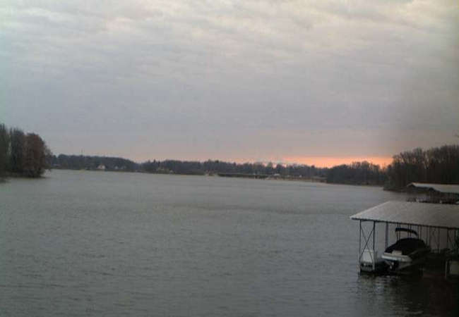

Rain Chances Wednesday, But Generally Dry Into Next Week

Temperatures more typical of mid to late April are gradually building back in across central Illinois. Chilly Canadian air is retreating and moderating temperatures can be expected into early next week. Look for afternoon highs in the mid to upper 50s for the rest of the work week and into the start of the weekend.
The weather pattern overall stays quiet and dry as well for the extended period. However, low pressure lifting over northern Illinois Wednesday brings increasing clouds into the area by Wednesday morning and there could be a few very widely scattered showers for locations along and north of I-74 and very slim chances for spotty showers farther south into the heart of central Illinois. Otherwise, the majority of the area stays dry with mostly cloudy skies and strong south to southwest winds gusting up to 40 mph at times. Additionally, temperatures will take a dive Wednesday afternoon with the passage of the cold front. Wednesday's high temperatures will top out in the mid 50s around Noon and quickly fall to the low to mid 40s by 5pm and down to the low to mid 30s late Wednesday night.
Tranquil weather with lighter winds returns by Thursday. Quiet and dry weather continues under partly to mostly sunny skies over the upcoming weekend and into early next week with a gradual warming trend featuring more seasonable high in the mid to upper 60s.